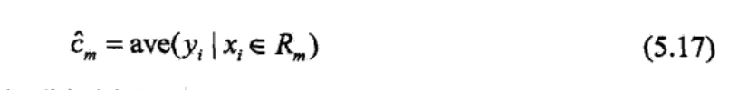

CART算法
分类与回归树(classification and regression tree, CART)模型由 Breiman等人在1984年提出，是应用广泛的决策树学习方法.CART同样由特征选择、树 的生成及剪枝组成，既可以用于分类也可以用于回归.以下将用于分类与回归的树统称为决策树.
CART是在给定输入随机变量X的条件下输出随机变量Y的条件概率分布的学习方法.CART假设决策树是二叉树，内部结点特征的取值为“是”和“否”，左分支是取值为“是”的分支，右分支是取值为“否”的分支.这样的决策树等价于递归地二分每个特征，将输入空间即特征空间划分为有限个单元，并在这些单元上确定预测的概率分布，也就是在输入给定的条件下输出的条件概率分布.
CART算法由以下两步组成：
1.决策树生成：基于训练数据集生成决策树，生成的决策树要尽量大：
2.决策树剪枝：用验证数据集对己生成的树进行剪枝并选择最优子树，这时用损失函数最小作为剪枝的标准.
CART生成
决策树的生成就是递归地构建二叉决策树的过程.对回归树用平方误差最小化准则，对分类树用基尼指数(Gini index)最小化准则，进行特征选择，生成二叉树.
1.回归树的生成
假设X与Y分别为输入和输出变量，并且Y是连续变量，给定训练数据集:
\(D={(x_1,y_1),(x_2,y_2),...(x_N,y_N)}\)
考虑如何生成回归树。
一个回归树对应着输入空间（即特征空间）的一个划分以及在划分的单元上 的输出值.假设己将输入空间划分为M个单元\(R_1,R_2,R_3...R_M\),并且在每个单元\(R_M\)上 有一个固定的输出值\(c_m\)，于是回归树模型可表示为:

当输入空间的划分确定时，可以用平方误差\(\sum_{x_i\in R}(y_i-f(x_i))^2\)来表示回归树对于训练数据的预测误差，用平方误差最小的准则求解每个单元上的最优输出值.易知，单元\(R_m\)上的\(c_m\)的最优值\(\hat c_m\)是\(R_m\)上的所有输入实例\(x_i\)对应的输出\(y_i\)的均值，即:

问题是怎样对输入空间进行划分,这里采用启发式的方法，选择第j个变量\(x^{(j)}\)和它取的值s，作为切分变量（splitting variable)和切分点（splitting point),并定义两个区域：

然后寻找最优切分变量j和最优切分点s，最优地，求解：

对固定输入变量j可以找到最优切分点s:

便利所有输入变量，找到最优的切分变量j，构成一个对\((j,s)\).依此将输入空间划分为两个区域。接着，对每个区域重复上述划分过程，直到满足停止条件为止.这样就生成一棵回归树。这样的回归树通常称为最小二乘回归树(least squares regression tree)，现将算法叙述如下：
最小二乘回归树生成算法：

2.分类树的生成
分类树用基尼指数选择最有特征，同时决定该特征的最优二值切分点。